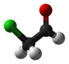

chloroacetaldehyde

Definition: Chloroacetaldehyde is an organic compound with the formula ClCH2CHO. Like some related compounds, it is highly electrophilic reagent and a potentially dangerous alkylating agent. The compound is not normally encountered in the anhydrous form, but rather as the hemiacetal (ClCH2CH(OH))2O.
Source: Wikipedia
Wikipedia Page
Wikidata Page